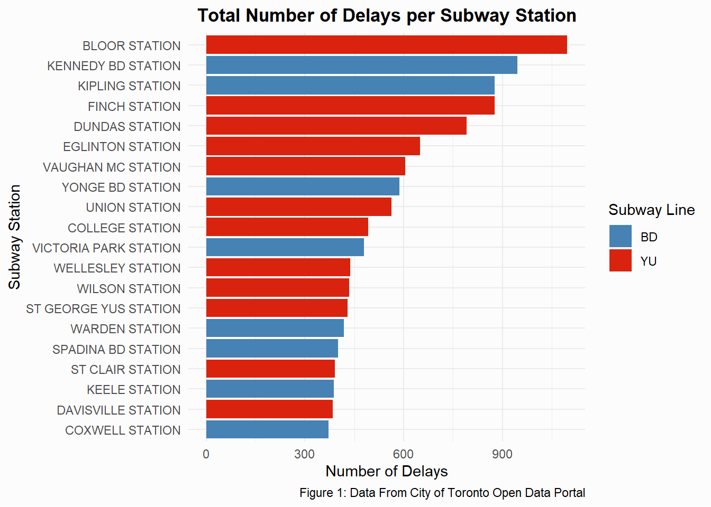
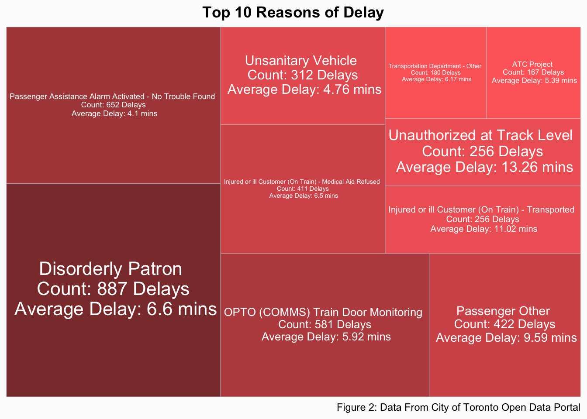
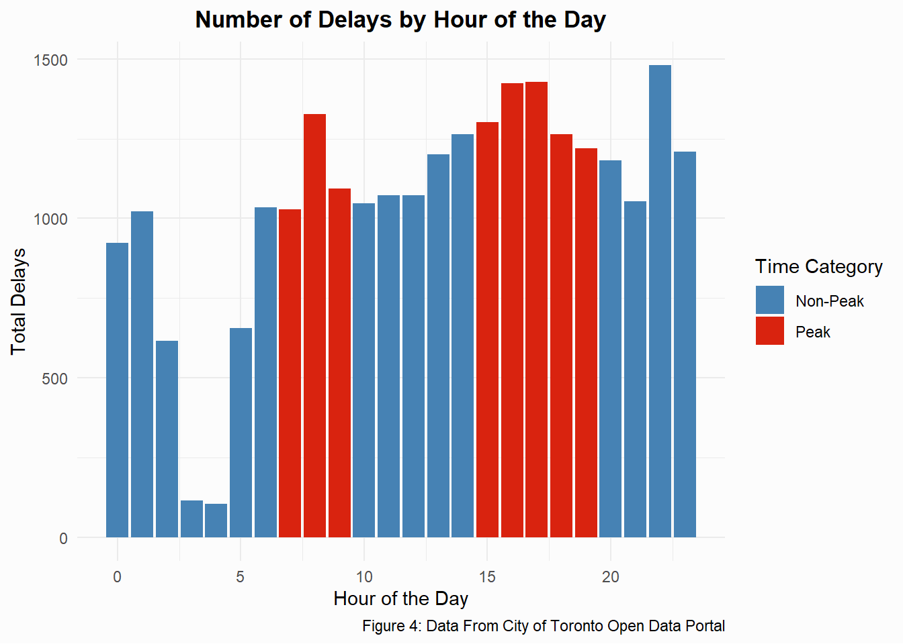

Exploratory Data Analysis (EDA): Station and Delay Analysis
To understand the nature of the subway delays, the following initial analyses were performed:
- Summary Statistics:
- Calculated the total number of delays and average delay duration at each station.
- Identified the most common delay causes and their frequency.
- Visualizations:
- Treemap: Delay reasons visualized in proportional blocks.
- Bar Chart: Number of delays per subway line and station.
- Time-Based Analysis:
- Created peak (7-9 AM, 3-7 PM) vs non-peak delay summaries.
- Examined how delay frequencies change by the hour.
Prelimary Results
Delays Per Station

We can see that Bloor, Kennedy, Kipling, Finch, Dundas, Eglinton, and VMC stations have the highest number of delays. These are all either terminal stations (Finch, Kennedy, Kipling, and VMC) or are the highest traffic stations which see the most passengers (Dundas and Eglinton). We can also see that more Yonge-University line stations have have a large amount of delays. No stations from the Sheppard line made this list. We can further look into this by exploring the types of delays that are occurring at stations.
Reasons For Delay

| Delay Code | Count | Average Delay Time |
|---|---|---|
| Disorderly Patron | 3405 | 2.5013216 |
| Injured or ill Customer (In Station) - Transported | 2680 | 0.0742537 |
| Passenger Other | 2508 | 2.3257576 |
| Passenger Assistance Alarm Activated - No Trouble Found | 1713 | 2.0811442 |
| Injured or ill Customer (In Station) - Medical Aid Refused | 1486 | 0.1130552 |
| OPTO (COMMS) Train Door Monitoring | 1452 | 3.4765840 |
| Miscellaneous Other | 1019 | 1.4533857 |
| Escalator/Elevator Incident | 832 | 0.0144231 |
| Injured or ill Customer (On Train) - Medical Aid Refused | 807 | 5.1846344 |
| Unauthorized at Track Level | 721 | 7.7711512 |
The top reasons for subway delays in Toronto seem to be passenger-related incidents, with “Disorderly Patron” being the most frequent cause, accounting for 3405 delays with an average delay of 2.5 minutes. Other notable causes include Injured or Ill Customers (2680 delays, 0.07 min avg), Passenger Assistance Alarm Activated (1713 delays, 2.08 min avg) and Train Door Monitoring (1452 delays, 3.48 min avg).
Total Delay Time

| Code | Code Description |
|---|---|
| SUDP | Disorderly Patron |
| SUO | Passenger Other |
| SUUT | Unauthorized at Track Level |
| PUOPO | OPTO (COMMS) Train Door Monitoring |
| MUI | Injured or ill Customer (On Train) - Transported |
| MUIR | Injured or ill Customer (On Train) - Medical Aid Refused |
| MUPAA | Passenger Assistance Alarm Activated - No Trouble Found |
| MUPR1 | Priority One - Train in Contact With Person |
| MUSAN | Unsanitary Vehicle |
| MUPLB | Fire/Smoke Plan B - Source TTC |
The top delay causes by total delay time highlight disorderly patrons as the most significant issue, causing over 8,000 minutes of delays throughout the year. Other major contributors include unauthorized people at track level, train door monitoring and injured or ill customers, each accumulating several hundred minutes of delays. Passenger-related incidents, including assaults, alarms, and other disruptions, collectively contribute to substantial downtime. The difference we see with this and the last visualization is that a few of the most commonly occurring delays, such as injured passengers in the station (not the trains), and elevator/escalator incidents are not in the top 10 of total delay time since the average time for those delays is much less.
Time of Day of Delays

| Time Category | Total Delays | Average Delay Time (mins) | Average Number of Delays per Hour |
|---|---|---|---|
| Non-Peak | 15053 | 2.77 | 1075.214 |
| Peak | 10089 | 3.03 | 1261.125 |
Figure 4 shows the occurrence of delays distributed by the time of day at which they occur. The peak hours are based on the official TTC rush hour times when train service is increased. There is a significant jump in the number of delays during the rush hours as well as late at night at 11pm. What is interesting is that while the number of delays is much higher during peak hours, the average time of each delay is almost the same (they only differ by about 15 seconds).
Summary
This analysis of TTC subway delays has provided several key insights into delay causes, timing patterns, and station-specific trends. The most frequent delay and the delay that has wasted the most amount of time this year is Disorderly Patrons, accounting for 3405 recorded delays and taking a total of 8517 hours, much more than any other delay type. Other common delay types include passenger assistance alarms being activated, train door monitoring issues, and medical emergencies. However, when examining total delay time, disruptions such as unauthorized people at track level and injured or ill customer on train incidents accumulate significantly more system downtime, despite occurring less frequently.
In terms of time-based patters, delays are more frequent during peak hours (7-9 AM, 3-7 PM) when the TTC is running more trains, with a noticeable spike between 4 and 6 PM. Interestingly, while peak hours have more delays, the average duration of each delay is similar to non-peak periods, suggestions that the nature of delays remains relatively consistent through the day. Additionally, certain stations such as Kipling, Bloor, Kennedy and Finch experience the highest number of delays, many of which are near major transfer or terminal stations.
Copyright © 2025. Avi Walia.